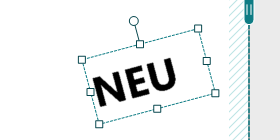
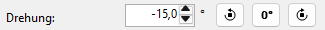
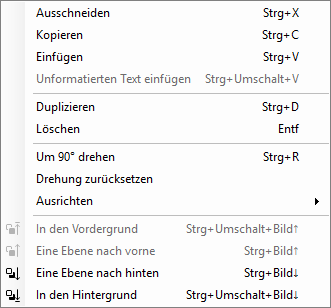
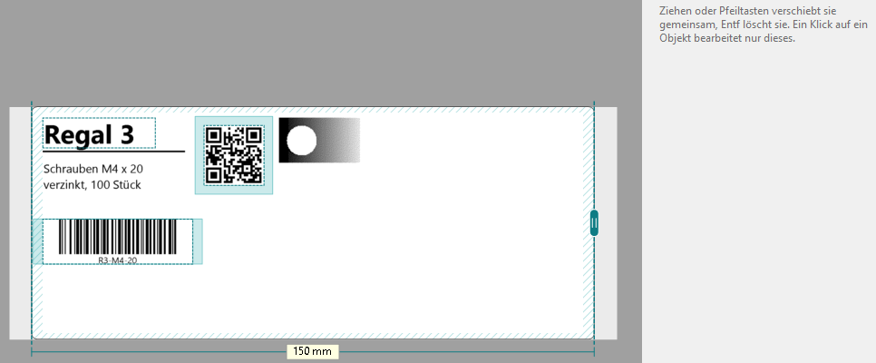
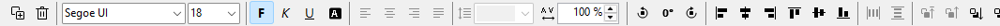
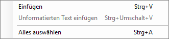

Drehen und Anordnen
Grafiktext, Mengentext, Formen und Bilder drehen Sie um jeden Winkel. Mehrere Objekte richten Sie mit der Leiste Anordnen aneinander aus.
-
Am Griff drehen
Klicken Sie das Objekt an. Über seiner Oberkante erscheint ein runder Griff; er dreht mit (nach 90° sitzt er rechts). Ziehen Sie ihn im Kreis; neben der Maus steht der Winkel. Bei 0°, 90°, 180° und 270° rastet er mit einer gepunkteten Hilfslinie ein.

Die Anfasser eines gedrehten Objekts ändern seine Größe entlang seiner eigenen Seiten.
-
Winkel eintippen
Rechts im Feld Drehung einen Winkel von −180° bis 180° eingeben. Die beiden äußeren Knöpfe daneben drehen um 90° nach links oder rechts.

-
Drehung zurücksetzen
Der Knopf 0° zwischen den beiden Dreh-Knöpfen stellt das Objekt wieder gerade, auch aus einem freien Winkel wie −15°. Ihn gibt es rechts neben Drehung und in der Leiste Anordnen; im Menü Anordnen und im Kontextmenü heißt er Drehung zurücksetzen.

Bei mehreren Objekten werden alle gedrehten gerade gestellt. Steht schon alles bei 0°, ist der Befehl grau. Strg + Z macht ihn wie jede Änderung rückgängig.
-
Mehrere Objekte auswählen
Mit Strg+Klick oder Umschalt+Klick kommt ein Objekt dazu oder fällt weg. Oder Sie ziehen auf einer freien Stelle einen Rahmen auf: Alles, was er berührt, wird ausgewählt. Ausgewählte Objekte haben einen gestrichelten Rahmen, und rechts steht, wie viele es sind.

Ein Klick auf ein einzelnes Objekt bearbeitet nur dieses.
-
Ausrichten und verteilen
Die Leiste Anordnen über der Zeichenfläche enthält von links nach rechts: Duplizieren und Löschen, die Textgruppe (Schriftart, Größe, F K U, Ausrichtung und Abstände; siehe Grafiktext und Mengentext), um 90° nach links drehen, Drehung zurücksetzen (0°), um 90° nach rechts drehen, sechs Knöpfe zum Ausrichten, zwei zum Verteilen und die vier Ebenen. Was für die Auswahl gerade nicht funktioniert, ist grau. In einem schmalen Fenster rücken die Knöpfe am Ende hinter ».

Ein einzelnes Objekt richtet sich am druckbaren Bereich aus. Mehrere Objekte richten sich aneinander aus: Links ausrichten schiebt alle an die linke Kante des Objekts, das am weitesten links liegt. Der Tooltip jedes Knopfs nennt dazu „am druckbaren Bereich“ oder „an der Auswahl“.
Horizontal verteilen und Vertikal verteilen brauchen drei oder mehr Objekte. Sie machen die Abstände gleich; das erste und das letzte Objekt bleiben stehen. Überlappen sich Objekte, werden die Abstände ihrer Mitten gleich.
Dieselben Befehle stehen im Menü Anordnen.
-
Was liegt oben? Ebenen
Ein später eingefügtes Objekt liegt über den früheren. Das ändern In den Vordergrund, Eine Ebene nach vorne, Eine Ebene nach hinten und In den Hintergrund: in der Leiste, im Menü Anordnen und mit einem Rechtsklick auf das Objekt.
Das Kontextmenü eines Objekts enthält außerdem Ausschneiden, Kopieren, Einfügen, Duplizieren, Löschen, Um 90° drehen, Drehung zurücksetzen und Ausrichten. Mit einem Rechtsklick auf eine leere Stelle fügen Sie dort ein.
